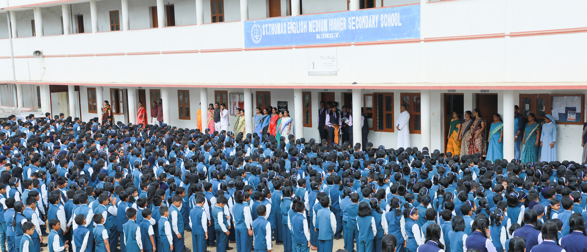

ST.Thomas English Medium Higher Secondary School Attapallam,Kumily

Vision
Form true citizens of the country who are academically excellent imbued with the values and virtues of an ideal human being.
About Us
St Thomas English Medium Higher Secondary School was founded in 1978 by St Thomas Forane Church Attappallam, Kumily, under the diocese of Kanjirapally. 1978 - L.P. Section begins. 1984 - Upgraded as an Upper Primary School 1996 - Became High School 2002 - Commenced the Higher Secondary section with Science and Mathematics.
Thc School, for the last 39 years caters to the academic needs of the people in and around Kumily irrespective of their creed and breed. Since its inception, it has been growing steadily and rapidly. The outstanding academic record constantly maintained by the school in the Public Examinations in Secondary and Higher Secondary level and its achievements in co-curricular activities since its inception have made it one of the most reputed and best schools in the state.